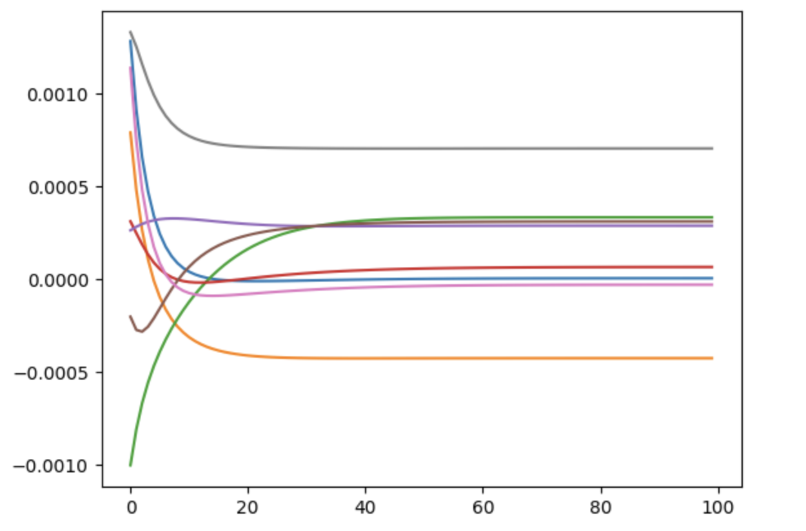
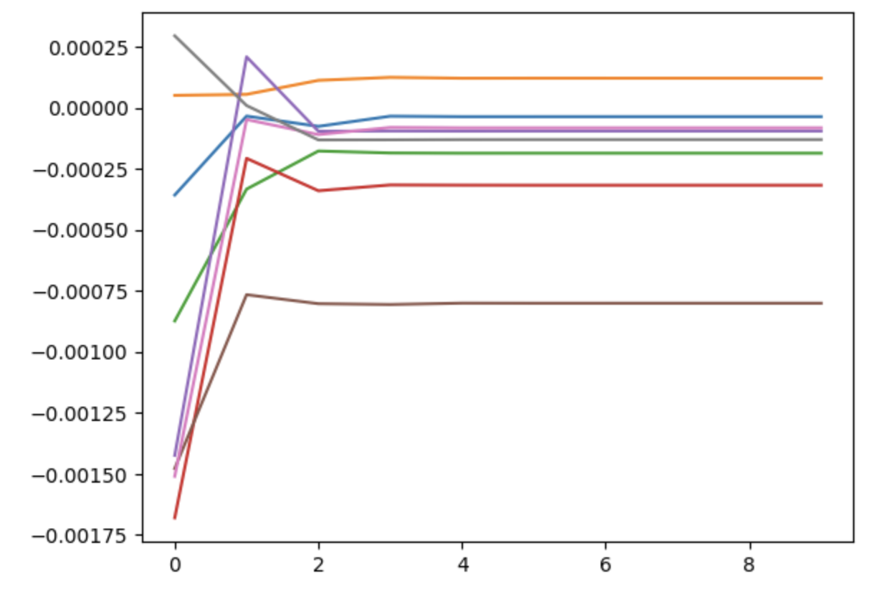
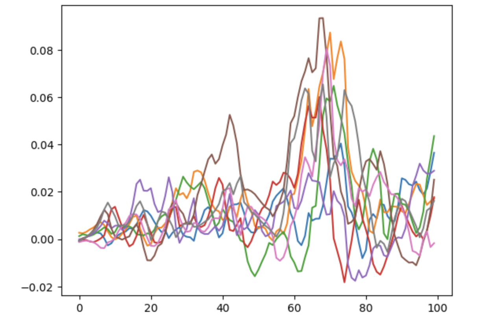
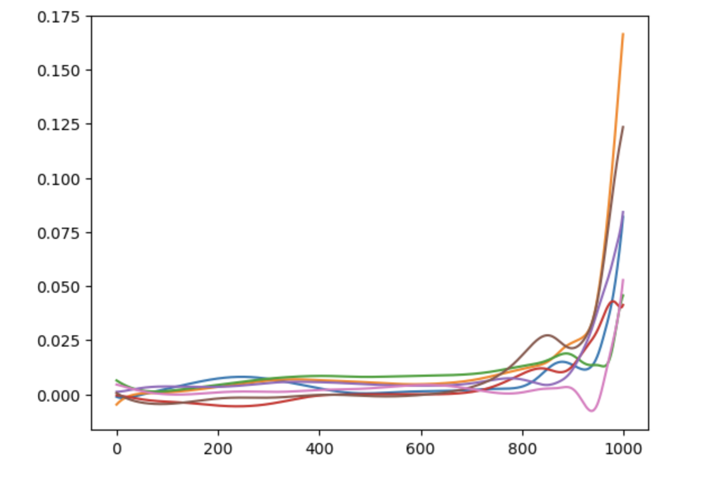

(X-posted on the CyberCat Institute blog)
I have been playing around with Nash equilibrium search in random normal form games by following best response dynamics - partly because I was curious, and partly as a learning exercise in NumPy.
Here are my preliminary conclusions:
- The key to success is replacing argmax with softmax for a sufficiently high temperature. For low temperatures, nothing I could do would make it converge.
- Provided the temperature is high enough, the learning rate is irrelevant, with a learning rate of 1 (ie. literally overriding each strategy with its softmax best response every stage) converging in just a few steps.
- Normal form games are big. Like, really big. For 9 players and 9 moves, the payoff matrix no longer fits in my VRAM. For 10 players and 10 moves (which I still consider absolutely tiny) the payoff matrix contains exactly 10 = 100 billion parameters, making it large by the standards of an LLM at the time of writing.
My understanding of the theory is that this type of iterative method will not in general converge to a Nash equilibrium, but it will converge to an -equilibrium for some . What I don’t know is how the error can depend on the game and the learning algorithm. That’s something I’ll look into in some follow-up work, presumably by comparing my results to what NashPy finds.
Payoff tensors
For a normal form game with players and moves, the payoff matrix is an tensor, of rank . Each player gets one tensor rank of dimension for their move, and then there is one more rank of dimension to assign a payoff to each player.
Here is my incantation for initialising a random payoff tensor, with payoffs drawn uniformly between 0 and 1:
gen = np.random.default_rng()
shape = tuple(numMoves for i in range(numPlayers)) + (numPlayers,)
payoffMatrix = gen.random(shape)It turns out that with this distribution of payoffs, the law of large numbers kicks in and payoffs for any mixed strategy profile are extremely close to 0.5, and the more players there are the closer to 0.5 they are. Normal form games are defined up to arbitrary positive affine transformations of the payoffs, so I ended up going with a sort-of exponential distribution of payoffs, so that much higher payoffs could sometimes happen. This made very little difference but made me feel happier:
payoffMatrix = gen.exponential(1, shape) * gen.choice((-1, 1), shape)Computing payoffs
A mixed strategy profile is an stochstic matrix:
strategies = gen.random((numPlayers, numMoves))
for i in range(numPlayers):
strategies[i] = strategies[i] / sum(strategies[i])Here is the best incantation I could come up with for computing the resulting payoffs:
payoffs = payoffMatrix
for player in range(numPlayers):
payoffs = np.tensordot(strategies[player], payoffs, (0, 0))(For 9 players this is already too much for my poor laptop.)
I wish I could find a more declarative way to do this. For small and fixed number of players, this kind of thing works, but I didn’t want to mess with the stringly-typed incantation that would be necessary to do it for players:
payoffs = np.einsum('abcu,a,b,c', payoffMatrix, strategies[0], strategies[1], strategies[2])Deviations
For best response dynamics, the key step is: for each player, compute the payoffs that player can obtain by a unilateral deviation to each of their moves.
Here is the very unpleasant incantation I came up with to do this:
deviations = payoffMatrix[..., player]
for opponent in range(player):
deviations = np.tensordot(strategies[opponent], deviations, (0, 0))
for opponent in range(player + 1, numPlayers):
deviations = np.tensordot(strategies[opponent], deviations, (0, 1))First we slice the payoff tensor so we only have the payoffs for the player in question. Then for opponents of index lower than the player, we contract their strategy against the lowest tensor dimension. After that loop, the lowest tensor dimension corresponds to the current player’s move. Then for opponents of index higher than the player, we contract their strategy but skipping the first tensor dimension. At the end we’re left with just a vector, giving the payoff of each of the player’s moves when each opponent plays their current strategy.
As a functional programmer, I find all of this in very bad taste.
Learning
The rest is the easy part. We can use softmax:
def softmax(x, temperature):
exps = np.exp(x / temperature)
return exps / sum(exps)
newStrategy = softmax(deviations, temperature)or, in the zero-temperature limit, take a Dirac distribution at the argmax using this little incantation:
newStrategy = np.identity(numPlayers)[np.argmax(deviations)]Then apply the learning rate:
delta = newStrategy - strategies[player]
strategies[player] = strategies[player] + learningRate*deltaAll of this is looped over each player, and then over a number of learning stages, plus logging each player’s payoff and the maximum delta:
for stage in range(numStages):
# Compute expected payoffs
tempPayoffs = payoffMatrix
for player in range(numPlayers):
tempPayoffs = np.tensordot(strategies[player], tempPayoffs, (0, 0))
payoffs[stage] = tempPayoffs
for player in range(numPlayers):
# Compute deviation payoffs
deviations = payoffMatrix[..., player]
for opponent in range(player):
deviations = np.tensordot(strategies[opponent], deviations, (0, 0))
for opponent in range(player + 1, numPlayers):
deviations = np.tensordot(strategies[opponent], deviations, (0, 1))
# Update strategy
newStrategy = softmax(deviations, temperature)
delta = newStrategy - strategies[player]
strategies[player] = strategies[player] + learningRate*delta
# Log errors
errors[stage] = max(errors[stage], max(delta))Results
Everything in this section is for 8 players and 8 moves, which is the largest that my laptop can handle.
Here is a typical plot of each player’s payoff over 100 stages of learning, with a temperature of 0.01 and a learning rate of 0.1:

With this temperature, the learning rate can be increased all the way to 1, and the dynamics visibly converges in just a few stages:

In fact, this is so robust that it makes me wonder whether there could be a good proof of the constructive Brouwer theorem using statistical physics methods.
If the temperature is decreased further to 0.001, we lose convergence:

Although I haven’t confirmed it, my assumption is that lower temperature will converge to an -equilibrium for smaller , so we want it to be as low as possible while still converging.
Worst of all, if we decrease the learning rate to compensate we can get a sudden destabilisation after hundreds of stages:

That’s all for now. I’ll come back to this one I’ve figured out how to calculate the Nash error, which is the next thing I’m interested in finding out.